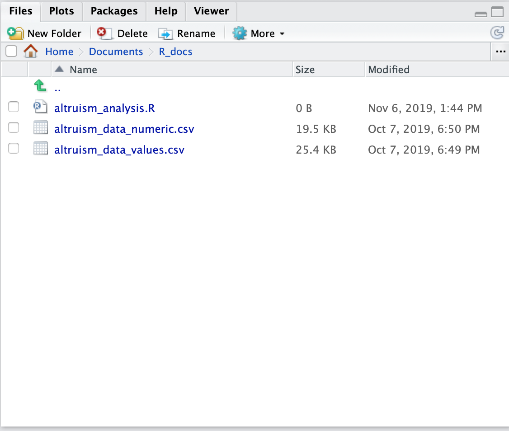

Step 3: Data Preprocessing
Set up an R Script and load your data into RStudio
Initiating the script
It's critical to have a script while working with R. There are two areas of the screen where you might write code: The script and the Console. The script is where you write down a set of commands in order and run them. When you run a line or chunk of code from the script, it gets sent to the console, where the computer actually processes it. So, as a general rule, other than installing packages (which is different from loading packages), it's best practice to write everything in your script and run it from there, rather than writing lines of code directly into the console. This way, you can keep track of what exactly you've run and in what order (which will be very important information to have easy access to when it comes to resolving any problems or errors that come up).
You can open up a blank R script in RStudio similarly to how you would open a new document in Microsoft Word:
The script will open up in the top left hand corner window. We should save it and name it in the same folder where we saved our data.
Set the working directory
This step is very important. If you forget to set the working directory, in all likelihood, you will keep getting errors when you try to load your data.
Imagine a tiny man named Steve who lives in your computer's hard drive. Whenever R needs access to a file on your computer, it asks Steve for the name of the file as you typed it in. Steve looks around the folder, finds it, and passes it to R to deal with. However, if Steve is sitting in the wrong folder, he looks around, doesn't find the file that R has asked for and tells R. So R throws an error to the console. Setting the working directory is how you pick Steve up from wherever he is and put him in the right folder to wait for R's request for a file.
Click the "Files" tab in the bottom right window in RStudio.Then navigate to the folder where your data is stored. If you can't seem to find it, find the files outside R and put them in one of the folders you can see in the window.
When you can see your data files in the window, click the "More" dropdown menu and select "Set As Working Directory". A line of code will spit out in your Console window.
Now we can load the data into our script!
Cleaning up your data
Once we run the lines where we assign our data to a variable, it should show up under the "Environment" tab in the upper right hand window. Now let's take a look at it. To do this, you can either click the little chart icon next to the dataframe, or you can type "View(fulldata)" (or whatever your dataframe is called) into the console and hit enter. A new tab will show up in the top left screen where you can look at a spreadsheet of your data.
You'll notice a lot of data columns that Qualtrics adds on to what we explicitly collected, like StartDate, Location Latitude and Longitude, and even empty columns like participants' first and last names. You'll also notice that the first two rows of the spreadsheet are not data, but more information about the data in the column. Given the column headers are sufficiently informative (as they are here), we don't need these rows. Beyond that, as a rule when dealing with survey dataframes, each row in the dataframe should represent one participant's data.